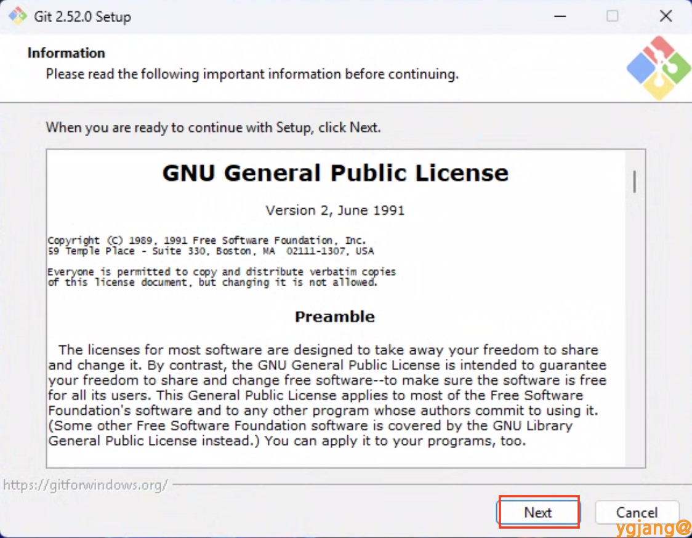
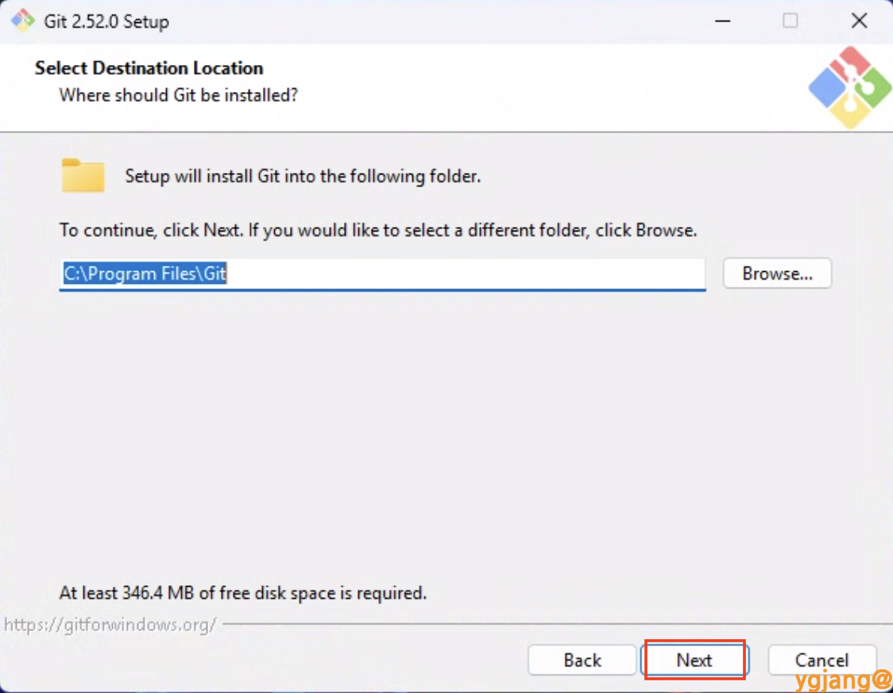
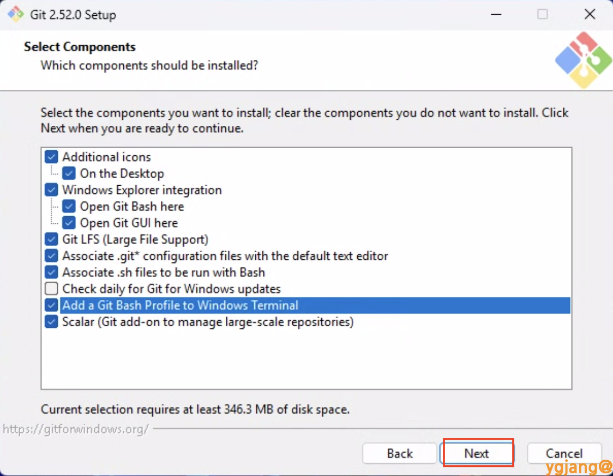
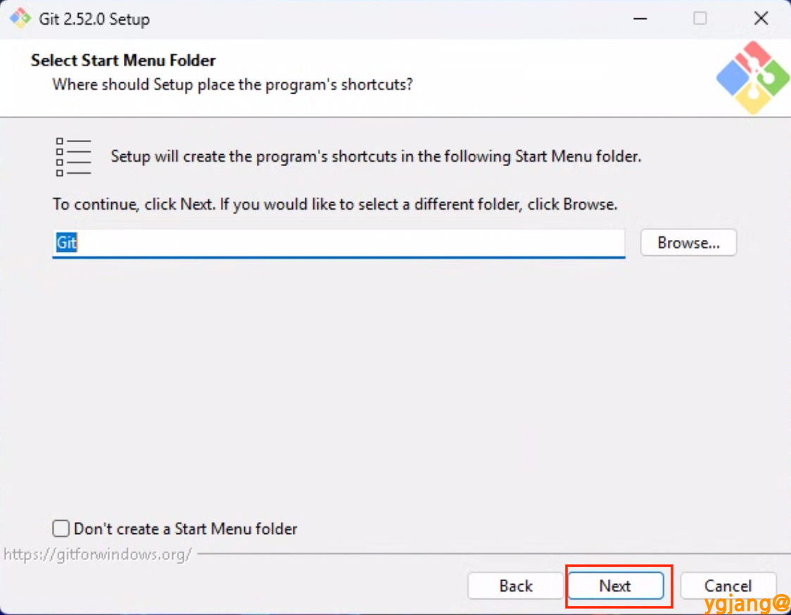
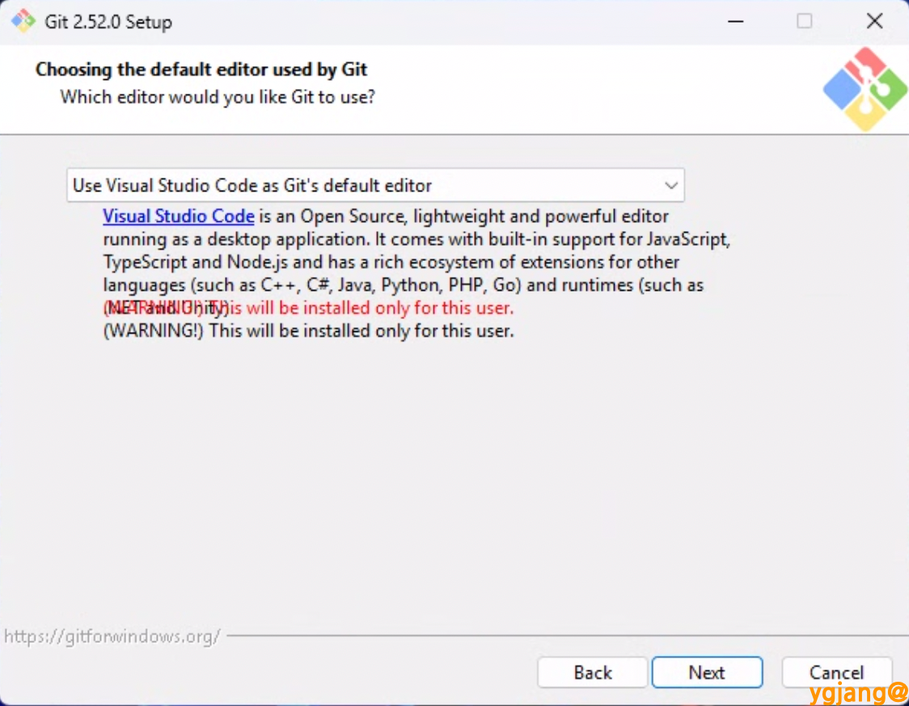
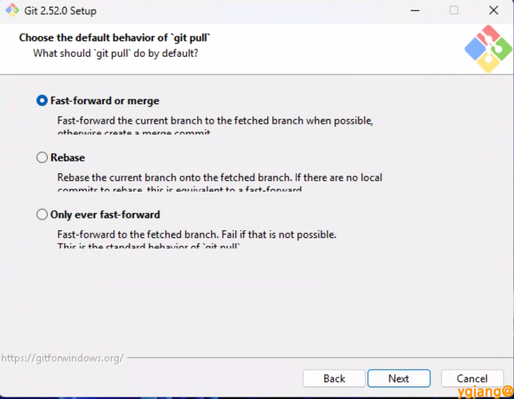

Git 설치(Windows)
2. 실행
다운로드 된
Git-2.52.0-64-bit.exe 파일을 실행합니다.
3. 시작
[Next] 버튼을 클릭하여 설치를 시작합니다.

4. 설치 위치 지정
기본 경로를 확인하고 [Next]를 클릭합니다.

5. 구성 요소 선택
Windows 터미널에 Git Bash 프로필을 추가하려면 Add a Git Bash Profile to Windows Terminal을 선택하고 [Next]를 클릭합니다.

6. 시작 메뉴 폴더 설정
[Next]를 클릭합니다.

7. 기본 에디터 선택
사용하고자 하는 에디터를 선택합니다. Visual Studio Code를 사용한다면 [Use Visual Studio Code as Git’s default editor]를 선택합니다.

8. 기본 브랜치 이름 설정

Adjusting the name of the initial branch
- Let Git decide: 기본 브랜치명으로
master사용 - Override the default branch name for new repositories:
main등 사용자가 지정한 이름 사용
9. ‘git pull’ 기본 동작 설정
원격 저장소의 내용을 가져올 때의 합치기 방식을 결정합니다.
- Default (Fast-forward or merge): 일반적인 방식. 수정 사항이 없으면 최신화(FF), 양쪽 모두 수정 시 병합 커밋 생성(Merge).
- Rebase: 내 작업을 잠시 떼어놓고 서버 최신 코드 위에 다시 쌓아 히스토리를 한 줄로 관리.
- Only ever fast-forward: 내 수정 사항이 없을 때만 pull 허용 (가장 보수적/안전).

이후 과정은 기본 권장 설정을 유지하며 [Next]를 클릭하여 설치를 완료합니다.